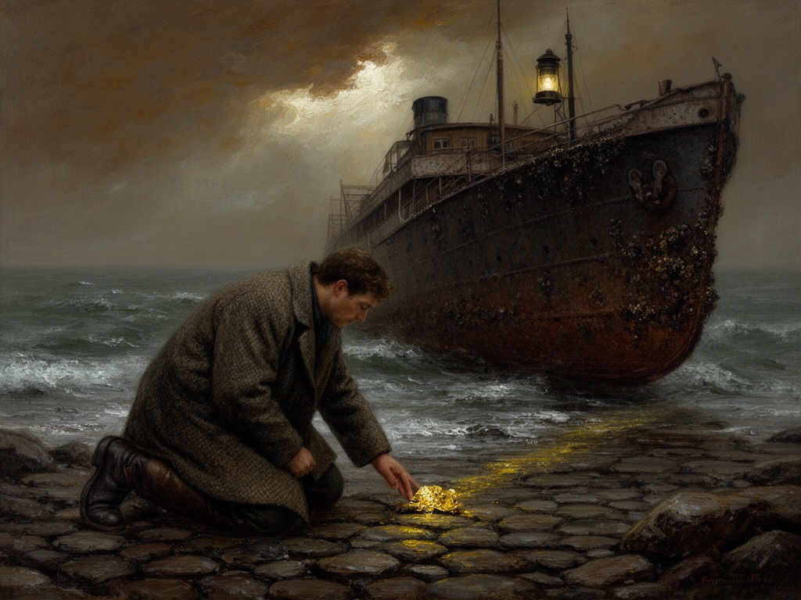

2026-09-23
The Stranding and the Glint
Anno MDCCCLXXXIV
Oil on linen, 1884
I stood on that cold shore, watching the iron hull groan against the rocks. The fog was thick, and I could taste the salt and the rust. But then, among the wreckage, the sun caught something—a small, sharp gleam. It was not hope, not exactly, but it was a kind of promise, hard and bright against the gray. I wanted to paint that moment when the world’s trouble turns, for an instant, into a possibility.
Responding to: The French steamship Arctique ran aground on the northern coast of Cape Virgenes in Argentina; gold was discovered during the rescue effort, triggering the Tierra del Fuego Gold Rush. (Wikipedia)